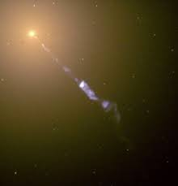

Accretion disks are large disks of matter that rotate and swirl around gravitating bodies. I find them fascinating due to their ubiquity in the formation of bodies in space. They can be found around black holes, contact/close binary systems, and in the process of protoplanetary formation. Perhaps the most stunning and neighborly accretion disks are the rings around Saturn, which are formed mostly of ice and dust.
This website will focus on the formation of accretion disks around black holes (and the gamma ray bursts that result). My secondary focus will be the accretion disks that form from close binary systems, in which a primary star will “suck” matter away from a secondary star in such a way that it forms a disk.
Accretion disks that evolve into protostars (baby stars) are formed from clouds of material that are disturbed by an external trigger. This causes an instability in the cloud and material begins to combine at a point. With more gravitational attraction at that point than others, more particles are attracted to the point and accrete into a larger and larger structure. This snowballs into a protostar.
Black hole accretion disks are simply formed by matter falling into a near-miss orbit around the black hole. The black hole will simply spin the matter into a disk because of its intense gravitational pull (more on this later) The accretion disk will slowly shrink, since the matter isn’t in a stable orbit. The matter will only “disappear” if it’s around a black hole. If it’s around another gravitating body, it will simply accrete on the surface of the body. The matter spins around more quickly as it gets closer to the gravitating body in order to conserve angular momentum.
Accretion disks often become very bright due to the “fluid” nature of their structure. When matter is spun into an accretion disk, it is approximated to a fluid because of the numerous particles and pieces of material that are jostling against each other in their orbit. There is almost no stable orbit here, just random motion. The whole disk can be assumed to be in a stable orbit but there isn’t any easy way to calculate the path of any given particle in the disk.
However, due to this motion, we know that the disk will have a given temperature. Due to the number of particles and collisions, the temperatures can be so high that they give off X-rays! This temperature is caused by the collisions of material within the accretion disk. The disk also moves inward, toward the black hole. In order for the gas to fall “into” the black hole, it must lose angular momentum. How does it do this?
As gas particles fall into the black hole, they must lose angular momentum. Although the particles themselves do not have constant angular momentum, the accretion disk does have constant angular momentum. This is due to angular momentum transport, in which the gas particles at a smaller radius from the black hole transfer angular momentum to particles at a larger radius. This can be done in two ways: magnetohydrodynamic winds (or "thermal winds"), and redistribution.
Magnetohydrodynamic winds are extremely complex. They wick away angular momentum from the entire disk.
On the other hand, momentum redistribution is comparatively simple. Just as two bodies can transfer angular momentum as they collide, so can particles in the accretion disk. Modelling this transfer of angular momentum from the inside to the outside of the disk is somewhat complex.
Astrophysical jets are extremely common in the universe. They are generated by many different bodies with accretion disks. The material ejected from the accretion disk along the axis of rotation of the gravitating often has a velocity equal to the escape velocity from that body’s gravitational pull at that radius! When jets are released from the pull of a black hole, they will reach incredibly large fractions of the speed of light, which are observed as gamma ray bursts. These are perhaps the most explosive and energetic events in the universe since the Big Bang. Gamma ray bursts can often have luminosities greater than 1050 erg/s. In comparison, our Sun has a luminosity of approximately 2.8x1031 erg/s. That’s 100,000,000,000,000,000,000 times brighter than our Sun.
The image above is a gamma ray burst from the center of Galaxy M87. Galaxy M87 contains a black hole that is approximately 6.4 billion masses. Can we calculate our observed velocity of this jet...?